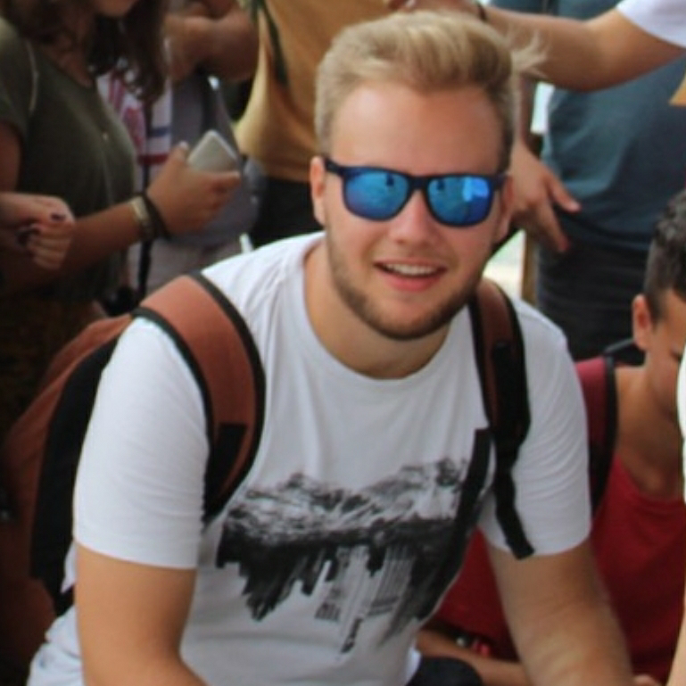

|  |
Adravecz Balázs vagyok, elsőéves gépészmérnök hallgató a Budapesti Műszaki és Gazdaságtudományi Egyetemen. Szeretek rajzolni, tervezni és néptáncolni. Főleg az autók érdekelnek és a 3d-modellezés/nyomtatás. A csapatmunkát nem vetem meg, könnyen és pontosan tudok másokkal együtt dolgozni. Az idegen nyelvek se jelentenek kihívást, angolul, németül folyékonyan beszélek, új nyelveket is szívesen tanulok. Az oldal elkészítésének dokumentációja: Dokumentum |